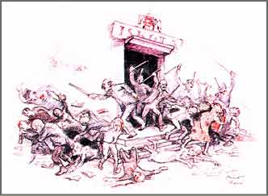

|  | |||
| Mihály Biró’s set of drawings bears the name of the counter-revolutionary era’s leader, Miklós Horthy (1868–1957), and depicts political events of the era. This drawing refers to the law of Numerus Clausus. The set of drawings was published in Vienna. | |||